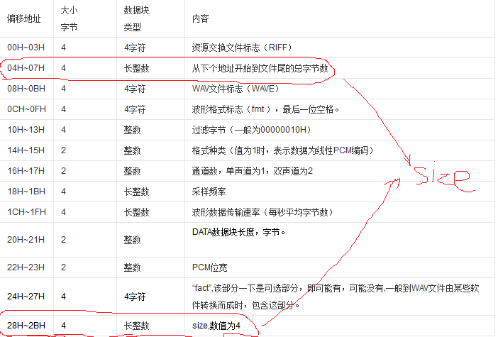

MATLAB读取wav文件报错："Incorrect chunk size information in WAV file."解决办法
问题描述
在毕业设计中，需要用软件WXtoimg记录的NOAA发出的APT信号(wav格式),然后用MATLAB读取该wav文件，从而解调出所需要的卫星图，但是在用MATLAB读取该文件时却出现了以下错误：1
2Error using ==> wavread
Incorrect chunk size information in WAV file.
即文件大小信息不正确。
问题分析
根据错误信息可知：我们尝试读取的wav文件的结构不正确。
在wav文件的文件头信息里，有两个数值与wav文件的大小有关，如果这两个数值与文件的实际大小不相符的话，这个文件就会被认为是无效的文件。从网上找到wav文件的文件头各个字节所代表的意义，如下表：

由表格可以看出：
- 在文件头的04H~07H地址的数值代表：从下个地址开始到文件尾的总字节数，数值：filesize - 8
- 在文件头的28H~2BH地址的数值代表：从下个地址开始到文件尾的总字节数，数值：filesize - 44
解决办法
我们已经知道了错误原因和wav文件正确的文件头，现在我们可以修改文件头信息里与文件大小相关的两个数值，使其与文件实际大小相符，即可改正wav文件。
新建matlab函数：wavchunksizefix.m
以下为修正wav文件的matlab函数：
1 | function wavchunksizefix( filename ) |
将这个wavchunksizefix.m文件放进matlab的执行目录里，然后在命令行里运行如下命令：
1 | wavchunksizefix( filename ) |
现在wav文件即得到修正，经测试，重新用wavread函数读取该文件不会再报错。
注意
该matlab函数会直接修改wav文件，建议修改wav文件之前先备份wav文件。